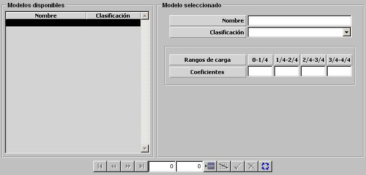

Consumo de Combustible de Aéreas según Carga

Los modelos de Consumo de Combustible de unidades Aéreas según Altura se ven afectados por el rango de Carga de la unidad. Esta influencia se parametrizan mediante una tabla en la que se introducen coeficientes de corrección para los siguientes rangos de carga de la unidad, expresados en fracciones de la carga máxima de la unidad:
0 – 1/4, 1/4 – 2/4, 2/4 – 3/4, 3/4 – 1
Descripción de los parámetros:
Coeficiente: Factor que aumenta el consumo de combustible de la unidad aérea.
Unidades: ---
Rango: 1.000 - 9.999
Ejemplo:
Si Coeficiente = 1.000 ⇒ no afecta al consumo combustible.
Si Coeficiente = 9.999 ⇒ multiplica por ~10 el consumo.